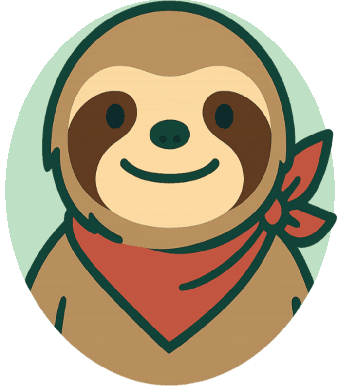

Educación Personalizada que
Transforma Vidas.
Plataforma SaaS para conectar docentes y estudiantes en tiempo real, optimizando el aprendizaje personalizado con inteligencia cognitiva y acompañamiento empático liderado por nuestra mascota Aren el Capibara.
"¡Hola! Soy Aren el Capibara. Estoy aquí para acompañarte en tu ruta de aprendizaje personalizada."
Aren: El Capibara Asistente Cognitivo
Aren acompaña a estudiantes y profesores durante cada clase, celebrando logros académicos, recordando repasos clave y reduciendo la ansiedad escolar.

Aren el Capibara
Asistente principal en la interfaz del estudiante. Guía los módulos de repaso y sugiere descansos cognitivos.

Compañero Perezoso
Avatar alternativo para modos de ritmo pausado y sesiones de concentración profunda.
Empatía & Reducción de Estrés
Diseñado con la personalidad calmada y amistosa de un capibara para brindar un entorno libre de presiones y favorecer el aprendizaje.
Gamificación Educativa Positiva
Premia la constancia y el esfuerzo personal sin fomentar la competitividad destructiva entre compañeros de clase.
Recordatorios de Repaso Inteligente
Utiliza las matrices de retención para sugerir pequeños ejercicios justo cuando la curva del olvido empieza a actuar.
Transformando Aulas en El Salvador & Costa Rica
ArenAI fue diseñado tras sesiones de alineación técnica con autoridades de educación del MINED (El Salvador) y MEP (Costa Rica).
Alineación con Estándares Nacionales
Adhesión a normativas de protección de datos personales de menores y compatibilidad con programas oficiales de formación docente.
Reducción de Carga Administrativa
Permite a los profesores diagnosticar el nivel de grupo en tiempo real sin dedicar horas extras a la calificación manual de pruebas.
Galería & Demostración de Interfaz
Explora la experiencia de usuario diseñada tanto para el panel del profesor como para la vista interactiva del estudiante.
88.4% (Alto)
4ms Direct Socket
2 Alumnos
Módulo 04: Matrices de Transición de Estado
Selecciona la ruta recomendada por Aren para afianzar tus conocimientos.
Arquitectura de Grado Científico & Ingenieril
Fruto de meses de investigación y trabajo constante. Integración de sockets P2P, matrices cognitivas y grafos acíclicos para una experiencia fluida.
Conexión Directa entre Equipos
Comunicación bidireccional de ultrabaja latencia que permite la sincronización instantánea de datos y ejercicios entre el profesor y sus estudiantes sin cuellos de botella.
Análisis de Retención Continuo
Modelos matriciales inspirados en analítica avanzada (ModelArts) para evaluar la memoria de trabajo y afianzar conceptos clave de manera personalizada.
Rutas de Aprendizaje Dinámicas
Estructuración de mapas del conocimiento en grafos no cíclicos que adaptan automáticamente las lecciones en función de los prerrequisitos dominados por el usuario.